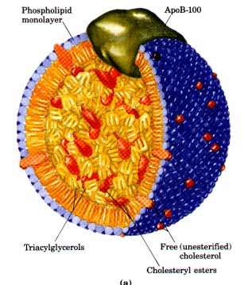
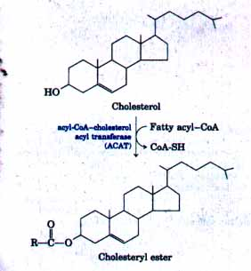
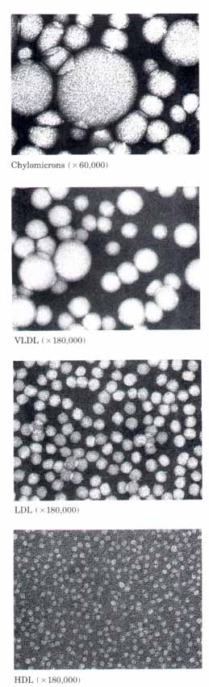
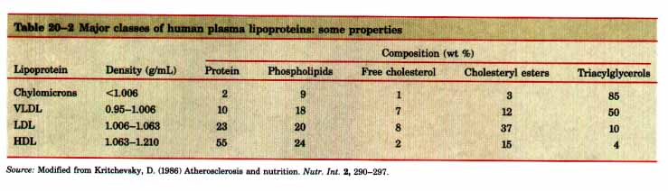
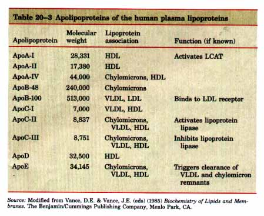
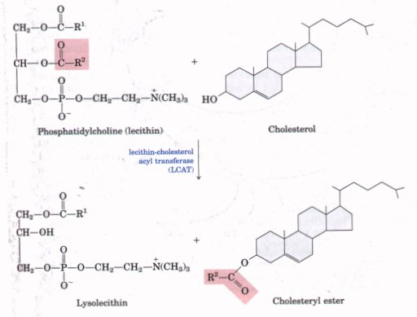

Most of the cholesterol synthesis in vertebrates takes place in the liver. A small fraction of the cholesterol made there is incorporated into the membranes of hepatocytes, but most of it is exported in one of three forms: biliary cholesterol, bile acids, or cholesteryl esters. Bile acids and their salts are relatively hydrophilic cholesterol derivatives that are synthesized in the liver and aid in lipid digestion (p. 480). Cholesteryl esters are formed in the liver through the action of acyl-CoAcholesterol acyl transferase (ACAT). This enzyme catalyzes the transfer of a fatty acid from coenzyme A to the hydroxyl group of cholesterol (Fig. 20-36), converting the cholesterol into a more hydrophobic form. Cholesteryl esters are transported in secreted lipoprotein particles to other tissues that use cholesterol, or are stored in the liver.
All growing animal tissues need cholesterol for membrane synthesis, and some organs (adrenal gland and gonads, for example) use cholesterol as a precursor for steroid hormone production (discussed later). Cholesterol is also a precursor of vitamin D (see Fig. 9-19).
Cholesterol and Other Lipids Are Carried on Plasma LipoproteinsCholesterol and cholesteryl esters, like triacylglycerols and phospholipids, are essentially insoluble in water. These lipids must, however, be moved from the tissue of origin (liver, where they are synthesized, or intestine, where they are absorbed) to the tissues in which they will be stored or consumed. They are carried in the blood plasma from one tissue to another as plasma lipoproteins, macromolecular complexes of specific carrier proteins called apolipoproteins with various combinations of phospholipids, cholesterol, cholesteryl esters, and triacylglycerols. Apolipoproteins ("apo" designates the protein in its lipid-free form) combine with lipids to form several classes of lipoprotein particles, spherical complexes with hydrophobic lipids in the core and the hydrophilic side chains of protein amino acids at the surface (Fig. 20-37a). Differing combinations of lipids and proteins produce particles of dif ferent densities, ranging from very low-density lipoproteins (VLDL) to high-density lipoproteins (HDL), which may be separated by ultracentrifugation (Table 20-2, p. 676) and visualized by electron microscopy (Fig. 20-37b). Each class of lipoprotein has a specific function, determined by its point of synthesis, lipid composition, and apolipoprotein content. At least nine different apolipoproteins are found in the lipoproteins of human plasma (Table 20-3); they can be distinguished by their size, their reactions with speciiic antibodies, and their characteristic distribution in the lipoprotein classes. These protein components act as signals, targeting lipoproteins to specific tissues or activating enzymes that act on the lipoproteins.  Figure 20-37 (a) Structure of a low-density lipoprotein (LDL). Apolipoprotein B-100 (apoB-100) is one of the largest single polypeptide chains known, with 4,636 amino acid residues (Mr 513,000). (b) Four classes of lipoproteins visualized in the electron microscope after negative staining. From top to bottom: chylomicrons (50-200 nm in diameter); VLDL (28-70 nm); LDL (20-25 nm); and HDL (8-11 nm). For properties of lipoproteins, see Table 20-2. |
 Figure 20-36 Synthesis of cholesteryl esters converts cholesterol into an even more hydrophobic form for storage and transport.  |


We discussed chylomicrons in Chapter 16, in connection with the movement of dietary triacylglycerols from the intestine to other tissues. They are the largest of the lipoproteins and the least dense, containing a high proportion of triacylglycerols (see Fig. 16-2). Chylomicrons are synthesized in the endoplasmic reticulum of epithelial cells that line the small intestine, then move through the lymphatic system, entering the bloodstream through the left subclavian vein. The apolipoproteins of chylomicrons include apoB-48 (unique to this class of lipoproteins), apoE, and apoC-II (Table 20-3). ApoC-II activates lipoprotein lipase in the capillaries of adipose, heart, skeletal muscle, and lactating mammary tissues, allowing the release of free fatty acids to these tissues. Chylomicrons thus carry fatty acids obtained in the diet to the tissues in which they will be consumed or stored as fuel. The remnants of chylomicrons, depleted of most of their triacylglycerols but still containing cholesterol, apoE, and apoB-48, move through the bloodstream to the liver, where they are taken up, degraded in lysosomes, and their constituents recycled.When the diet contains more fatty acids than are needed immediately as fuel, they are converted into triacylglycerols in the liver and packaged with specific apolipoproteins into very low-density lipoprotein, VLDL. Excess carbohydrate in the diet can also be converted into triacylglycerols in the liver and exported as VLDLs. In addition to triacylglycerols, VLDLs contain some cholesterol and cholesteryl esters, as well as apoB-100, apoC-I, apoC-II, apoC-III, and apo-E (Table 20-3). These lipoproteins are transported in the blood from the liver to muscle and adipose tissue, where activation of lipoprotein lipase by apoC-II causes the release of free fatty acids from the triacylglycerols of the VLDL. Adipocytes take up these fatty acids, resynthesize triacylglycerols from them, and store the products in intracellular lipid droplets, whereas myocytes mostly oxidize them to supply energy. Most VLDL remnants are removed from circulation by hepatocytes, via receptor-mediated uptake and lysosomal degradation.
The loss of triacylglycerols converts some VLDL to low-density lipoprotein, LDL (Table 20-2). Very rich in cholesterol and cholesteryl esters and containing apoB-100 as their major apoprotein, LDLs carry cholesterol to peripheral tissues (in addition to the liver) that have specific surface receptors that recognize apoB-100. These receptors mediate the uptake of cholesterol and cholesteryl esters in a process described below.
| The fourth major lipoprotein type, high-density lipoprotein, HDL, begins in the liver and small intestine as small, protein-rich particles containing relatively little cholesterol and no cholesteryl esters. HDLs contain apoC-I and apoC-II, among other apolipoproteins (Table 20-3), as well as the enzyme lecithin-cholesterol acyl transferase (LCAT), which catalyzes the formation of cholesteryl esters from lecithin (phosphatidylcholine) and cholesterol (Fig. 20-38).After release into the bloodstream, the nascent(newly synthetisized) HDL collects cholesteryl esters from other circulating lipoproteins. Chylomicrons and VLDLs, after the removal of their triacyglycerols by lipoprotein lipase, are rich in cholesterol and phosphatidylcholine. LCAT on the surface of nascent (newly forming) HDL particles converts the cholesterol and phosphatidylcholine of chylomicron and VLDL remnants to cholesteryl esters, which begin to form a core, transforming the disc-shaped nascent HDL to a mature, spherical HDL particle. This cholesterol-rich lipoprotein now returns to the liver, where the cholesterol is unloaded. Some of this cholesterol is converted into bile salts. |  Figure 20-38 The reaction catalyzed by lecithincholesterol acyl transferase (LCAT). This enzyme is present on the surface of HDL and is stimulated by the HDL component apoA-I. The cholesteryl esters accumulate within nascent HDLs, converting them to mature HDLs. |